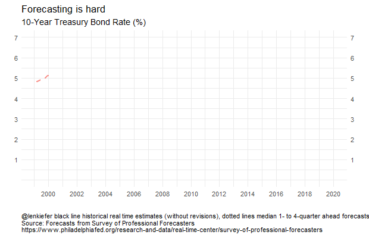
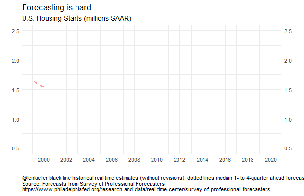

It’s the time of the year where everybody is dusting off their crystal balls and peering into the future. There’s even still time to send out your “Winter is Coming” newsletter.
Let’s take a step back and look at how forecasts of U.S. macro variables have evolved. Is forecasting still hard?
Last year we looked at historical forecasts of economic conditions in the post forecasting is hard. Let’s update it. Per usual, we’ll wrangle data and produce charts with R.
About data
Professional economists and analysts routinely make forecasts of economic conditions. There are several services that collect, aggregate and reproduce a variety of economic forecasts. For today’s exercise, we’ll look at forecasts collected in the Survey of Professional Forecasters.
he forecasts for the Survey of Professional Forecasters are currently provided by the Federal Reserve Bank of Philadelphia. The quarterly survey, formerly conducted by the American Statistical Association (ASA) and the National Bureau of Economic Research (NBER), began in 1968:Q4 and was taken over by the Philadelphia Fed in 1990:Q2. For more on the Survey, see the documentation provided by the Federal Reserve Bank of Philadelphia.
This survey is nice, because it is freely available, goes back to the 1960s for some variables, and is relatively easily accessible in files provided by the Federal Reserve Bank of Philadelphia on their webpage.
Below are descriptions and R code for the data, copied over from my previous post.
Getting the raw data
Click for R code to get data
The data are available in a variety of spreadsheets. You can download the variables one at a time if you are only interested in a subset. For example, here is a link to just housing starts forecasts. Alternatively, you can download all the survey responses. Because I am interested in both aggregates (like median and mean forecasts) and the cross sectional distribution of forecasts, I have chosen to download all invidual responses. GIVE ME MOAR DATA
You can get those data here.
- Surveys 1968:4-1979:4 Excel spreadsheet
- Surveys 1980:1-1989:4 Excel spreadsheet
- Surveys 1990:1-1999:4 Excel spreadsheet
- Surveys 2000:1-2009:4 Excel spreadsheet
- Surveys 2010:1-present Excel spreadsheet
About the data
Click for data details, copied from earlier post
Each of those links will allow you to download a spreadsheet names micro1.xlsx through micro5.xlsx. We can read these data into R and do some wrangling.
Before we do, let’s go back and read the documentation to better understand how the data are set up. Hurray for all the people who write clear documentation! You are real heros.
The data are stored in Excel spreadsheets, with data for each variable stored in a separate worksheet named after the mnemonic for that variable. Housing starts for example, are stored in a worksheet called HOUSING. For today, let’s focus on a subset of variables. They are listed below:
- HOUSING U.S. Housing Starts
- TBOND 10-year U.S. Treasury Bond rate
- TBILL 3-month U.S> Treasury Bill rate
- EMP U.S. Nonfarm Payroll Employment
- UNEMP U.S. Unemployment Rate
- CPI U.S. Consumer Price Index Inflation Rate
- CORECPI Core Consumer Price Index Inflation Rate
- PCE PCE Inflation Rate
- COREPCE Core PCE Inflation Rate
Within each worksheet there are 12 columns. The first four are:
- YEAR
- QUARTER
- ID
- INDUSTRY
corresponding to the year and quarter when the forecast is made, the survey respondent ID, and the industry for the survey respondent. We won’t be using the ID or INDUSTRY column for anything today. YEAR and QUARTER will let us construct a date variable.
The next 6 columns are numbered X1-X6 and the final two are XA and XB, where X is the mnemonic for the variable. It’s important to understand what each of these columns is measuring.
Each row identified by YEAR and QUARTER tells us when the forecast was made. Say for example we are looking at YEAR=2017 and QUARTER=3. That means the forecast is recorded in the 3rd quarter of 2017. X1 would record the respondent’s estimate of X in the prior quarter, so 2017:Q2 in our example. X2 is the forecast for the current quarter, and X3 through X6 for each of the next 4 quarters (X6 is the forecast for 4 quarters in the future, or 2018:Q3 in our example). The variables XA and XB represent the respondents forecasts for the current calendar year and the next calendar year (2017 and 2018 in our example).
We’re going to have to be careful about this because we are going to be dealing with two time dimensions. We are going to have a vintage corresponding to when the forecast was made. We are also going to have a period for the forecast itself. Because economic data is often only available with a lag and forecasts are made in the middle of a quarter, the forecaster will have to nowcast the current quarter. Indeed, though the prior quarter’s estimates are usually available when the forecast is made, not all respondents report the same number for X1.
Wrangle Data
Click for R code to wrangle data
Make sure you have downloaded the excel files linked above in your data directory. Then the following code should will get your data ready.
#####################################################################################
## Load Libraries ##
#####################################################################################
library(tidyverse)
library(readxl)
library(data.table)
library(tidyverse)
library(cowplot)
library(viridis)
#####################################################################################
#####################################################################################
# Import data
#####################################################################################
################################################################
# List of spreadsheets we'll import
################################################################
p.list <- c(
"data/micro1.xlsx", "data/micro2.xlsx", "data/micro3.xlsx",
"data/micro4.xlsx", "data/micro5.xlsx"
)
################################################################
# List of variables we want (corresponds to worksheet names)
# If you want MOAR variables, adjust the list
################################################################
vlist <- c(
"HOUSING", "TBOND", "EMP", "TBILL", "UNEMP", "RGDP",
"CPI", "CORECPI", "PCE", "COREPCE"
)
################################################################
# Import data function
my.import2 <-
function(path = "data/micro1.xlsx") {
vlist %>%
set_names() %>%
map_df(~ read_excel(path = path, sheet = .x), .id = "sheet")
}
################################################################
################################################################
# we probably could use purrr better here,
# but four copy + paste isn't so bad
################################################################
df1 <- my.import2(p.list[1])
df2 <- my.import2(p.list[2])
df3 <- my.import2(p.list[3])
df4 <- my.import2(p.list[4])
df5 <- my.import2(p.list[5])
# stack the data
df.all <- rbind(df1, df2, df3, df4, df5)
#####################################################################################
################################################################
# Tidy the data
################################################################
df.all %>%
filter(YEAR > 1989) %>% # restrict to just 1989
gather(var, value, -1, -2, -3, -4, -5) %>% # gather variables starting in column 6
mutate(
horizon = as.numeric(str_sub(var, start = -1)), # we'll explain below
value = as.numeric(value), # turn values into numbers
date = as.Date(ISOdate(YEAR, QUARTER * 3, 1)), # dates
ydate = date + months(horizon * 3 - 6) # we'll explain below
) %>%
select(date, ydate, horizon, everything()) %>% # i like date to be on the left
filter(!is.na(horizon)) -> df.all2 # get rid of annual forecasts
################################################################
# Summarize by medians
################################################################
df.median <-
df.all2 %>%
group_by(YEAR, QUARTER, sheet, horizon) %>%
dplyr::summarize(
value.sd = sd(value, na.rm = T),
value.iqr = quantile(value, 0.75, na.rm = T) - quantile(value, 0.25, na.rm = T),
value = median(value, na.rm = T)
) %>%
mutate(
date = as.Date(ISOdate(YEAR, QUARTER * 3, 1)),
ydate = date + months(horizon * 3 - 6)
)Make Plot
R code for making plots
################################################################
# Create a function to compare forecasts to actuals
################################################################
f.plot <- function(s = "HOUSING", h = 6, ymin = 1999) {
df.p <- filter(df.all2, YEAR >= ymin & sheet == s & horizon == h & !is.na(value))
g <-
ggplot(data = df.p, aes(x = ydate, y = value)) +
geom_boxplot(aes(group = ydate), outlier.size = 0.5) +
geom_point(alpha = 0.15, size = 0.9) + guides(color = F) +
theme_minimal() +
scale_color_viridis(discrete = T, end = 0.85) +
geom_path(
data = filter(df.median, YEAR >= ymin & sheet == s &
horizon == 1 & !is.na(value)),
aes(x = ydate), size = 1.05, color = "red"
) +
labs(x = "", y = "")
return(g)
}
################################################################
# Gonna use these for annotations
################################################################
df.p <- filter(df.all2, YEAR >= 1999 & sheet == "HOUSING" & horizon == 1 & !is.na(value))
# this will give us the red line actual
dfps <- filter(df.median, date == median(df.p$date) & sheet == "HOUSING" & horizon == 1)
# this will give us the dots/box
dfb <- filter(df.p, date == median(df.p$ydate) - months(24) &
sheet == "HOUSING" & horizon == 6)
# Combine plot with annotations
g1 <-
f.plot(s = "HOUSING") +
annotate(
geom = "text", x = median((df.p$date)) - months(24), hjust = 1,
y = 0.75, label = "actual estimates\nas observed in real time\n(without
revisions)",
color = "red"
) +
geom_segment(
data = dfps,
aes(
x = ydate, xend = ydate - months(24),
yend = 0.8, y = value
), color = "red", linetype = 2
) +
geom_segment(aes(
x = median(dfb$ydate), xend = median(dfb$ydate) + months(24),
y = median(dfb$value), yend = 1.8
), linetype = 3) +
annotate(
geom = "text", x = median((df.p$date)) + months(24), hjust = 0,
y = 1.82, label = "boxplots show\ndistribution of 4-quarter\nahead forecasts",
color = "black"
) +
labs(
x = "",
y = "Housing starts\n(quarterly average of monthly estimates in millions, SAAR)",
title = "4-quarter ahead forecasts for U.S. Housing Starts",
subtitle = "Solid line historical esimates of housing starts (without revisions), dots individual forecasts",
caption = "@lenkiefer Source: U.S. Census Bureau and Department of Housing and Urban Development\nForecasts from Survey of Professional Forecasters\nhttps://www.philadelphiafed.org/research-and-data/real-time-center/survey-of-professional-forecasters"
) +
theme(
plot.caption = element_text(hjust = 0),
plot.subtitle = element_text(face = "italic")
)The code above allows us to make the following annotated plot of forecasts for housing starts.
g1
The black dots represent what each forecaster in the panel believes housing starts will be four quarters in the future. A dot at 2017:Q4 corresponds to what an individual forecaster though housing starts would be in 2017:Q4 as of 2016Q4. The boxes summarize the distribution of black dots, with the box capturing the 25th to 75th percentile of forecasts and the line indicating the median forecast.
The red line is the median estimate from the panel the quarter after the data released. Since the data is available to forecasters at that time the red line should match the historical vintage estimate. Again using our example of 2017:Q2: the red line at 2017:Q2 represents the median estimate for 2017:Q2 housing starts as of 2017:Q3.
By comparing the red line to the black line, we can get a sense of what forecaster expected to see for housing starts (the dots/box) and then what they subsequently saw. In the early to mid- 2000s the red line was above the dots, meaning that forecasts were on average too low. During the Great Recession housing starts fell more than expected (the red line is below most of the dots) and the recovery was slower than expected.
The last four boxes, where there is no red line, are the four-quarter ahead forecasts for 2019 (the 2018Q1 forecast of 2019Q1, the 2018Q2 forecasts for 2019Q2, the 2018Q3 forecasts for 2019Q3 and the 2018Q4 forecasts for 2019Q4). The boxes are up, indicating expectations are for increases housing starts, but outlook as of 2018Q4 has dimmed a bit.
Another plot might be easier to digest. Let’s compare the median forecasts to the actual estimates.
R code for plot
################################################################
# Create a function to compare forecasts to actuals
################################################################
f.plot2 <- function(s = "HOUSING", ymin = 1999) {
df.p <- filter(df.median, YEAR >= ymin & sheet == s & !is.na(value))
g <-
ggplot(data = df.p, aes(x = ydate, y = value, group = date, color = factor(date))) +
geom_line(alpha = 0.75, linetype = 2, size = 1.02) +
guides(color = F) +
theme_minimal() +
geom_path(
data = filter(df.median, YEAR >= ymin & sheet == s & horizon == 1 & !
is.na(value)),
aes(x = ydate, group = "actual"), size = 1.05, color = "black"
) +
labs(x = "", y = "")
return(g)
}
################################################################
# Make a plot
################################################################
g2 <-
f.plot2() +
labs(
x = "", y = "Housing Starts(millions, SAAR)",
title = "4-quarter ahead forecasts for U.S. Housing Starts",
subtitle = "Solid line historical esimates of housing starts (without revisions), dotted lines median forecast",
caption = "@lenkiefer Source: U.S. Census Bureau and Department of Housing and Urban Development\nForecasts median forecasts from Survey of Professional Forecasters\nhttps://www.philadelphiafed.org/research-and-data/real-time-center/survey-of-professional-forecasters"
) +
theme(
plot.caption = element_text(hjust = 0),
plot.subtitle = element_text(face = "italic")
)
g3 <-
f.plot2(s = "TBOND") +
labs(
x = "", y = "Yield (%)",
title = "4-quarter ahead forecasts for 10-Year Treasury Bond Rate (%)",
subtitle = "Solid line historical esimates of housing starts (without revisions), dotted lines median forecast", caption = "@lenkiefer black line historical real time estimates (without revisions),\ndotted lines median 1- to 4-quarter ahead forecasts\nSource: Forecasts from Survey of Professional Forecasters\nhttps://www.philadelphiafed.org/research-and-data/real-time-center/survey-of-professional-forecasters"
) +
theme(
plot.caption = element_text(hjust = 0),
plot.subtitle = element_text(face = "italic")
)g2
We can see that from the early- to mid-2000s forecasters were expecting housing starts to decrease. Then during the Great Recession and the collapse of housing starts, forecasters tended to overestimate 4-quarter ahead starts. Once the recover began, forecasters also tended to overestimate starts. Early in the recovery, the tentacles have a greater slope, indicating forecasters anticipated a strong recovery. Over time, the slope of the forecast line started to flatten and line up with the data. In recent quarters forecasts still call for growth in starts, but at a slower pace, consistent with observations from Vulnerable Housing.
How about forecasts of some other variables? Let’s look at forecasts of the 10-year U.S. Treasury Yield.
g3
Here the story is pretty clear. For almost 20 years forecasters have been calling for long-term interest rates to rise and for the most part they have fallen. The forecast lines pretty much all for interest rates to increase by about one percentage point four quarters for now, but that has rarely been the case. Though perhaps this time is different. The forecasts from 2016 forward have been pretty accurate. Luck, or maybe they are on to something?
The SPF has multiple series. We can build a panel plot to compare forecasts for several variables:
R code for panel plots
################################################################
# Make panel plots
################################################################
g_panel_box <-
plot_grid(f.plot(s = "HOUSING") + labs(title = "Houing Starts (millions SAAR)"),
f.plot(s = "UNEMP") + labs(title = "Unemployment Rate (%)"),
f.plot(s = "TBILL") +
labs(
title = "3-Month Treasury Bill Rate (%)",
caption = "@lenkiefer solid line historical real time estimates (without revisions), dots 4-quarter ahead forecasts\nSource: Forecasts from Survey of Professional Forecasters\nhttps://www.philadelphiafed.org/research-and-data/real-time-center/survey-of-professional-forecasters"
) +
theme(plot.caption = element_text(hjust = 0)),
f.plot(s = "TBOND") +
labs(title = "10-Year Treasury Bond Rate (%)"),
align = "hv"
)
g_panel_line <-
plot_grid(f.plot2(s = "HOUSING") + labs(title = "Housing Starts (millions SAAR)"),
f.plot2(s = "UNEMP") + labs(title = "Unemployment Rate (%)"),
f.plot2(s = "TBILL") +
labs(
title = "3-Month Treasury Bill Rate (%)",
caption = "@lenkiefer black line historical real time estimates (without revisions),\ndotted lines median 1- to 4-quarter ahead forecasts\nSource: Forecasts from Survey of Professional Forecasters\nhttps://www.philadelphiafed.org/research-and-data/real-time-center/survey-of-professional-forecasters"
) +
theme(plot.caption = element_text(hjust = 0)),
f.plot2(s = "TBOND") + labs(title = "10-Year Treasury Bond Rate (%)"),
align = "hv"
)Forecasters have done a bit better forecasting short-term rates (3-month Treasury) and the unemployment rate.
g_panel_box
g_panel_line
Let’s take a closer look at the 3-month Treasury:

The 3-month Treasury follows the Federal Funds rate closely. As the Fed held short term rates near zero for many year, forecasting short-term rates was relatively easy. In recent years, as the Fed has started to gradually tighten forecast dispersion has increased. In 2015 year-ahead forecasts were too high, but in recent years the year-ahead forecasts have been a bit too low. Where are rates headed in 2019? Forecasts are for continued increases though the dispersion across forecasts has widened a bit.
Animation
It’s also fun to animate these plots. We’ll update our old code to use gifski. See this post for details on using gifski House Price gifski.
R code for plotting functions
We’ll create some functions to enable us to make plots.
library(gifski)
mydir <- "WHERE YOU SAVE YOUR FILES"
dlist <- unique(filter(df.median, YEAR >= 1999)$date)
N <- length(dlist)
# static plot
f.plot3 <- function(i = N, s = "HOUSING", ymin = 1999) {
df.p <- filter(df.median, date <= dlist[i], YEAR >= ymin & sheet == s & !is.na(value))
g <-
ggplot(data = df.p, aes(x = ydate, y = value, group = date, color = factor(date))) +
geom_line(alpha = 0.75, linetype = 2, size = 1.02) +
guides(color = F) +
theme_minimal() +
geom_path(
data = filter(df.median, date <= dlist[i], YEAR >= ymin & sheet == s & horizon == 1 & !
is.na(value)), alpha = 0.75,
aes(x = ydate, group = "actual"), size = 1.05, color = "black"
) +
labs(x = "", y = "") +
scale_x_date(limits = c(min(dlist), max(df.median$ydate)), date_breaks = "2 year", date_labels = "%Y") +
scale_y_continuous(limits = c(0, 7), sec.axis = dup_axis(), breaks = 1:7) +
labs(
title = "Forecasting is hard",
subtitle = "10-Year Treasury Bond Rate (%)",
caption = "@lenkiefer black line historical real time estimates (without revisions), dotted lines median 1- to 4-quarter ahead forecasts\nSource: Forecasts from Survey of Professional Forecasters\nhttps://www.philadelphiafed.org/research-and-data/real-time-center/survey-of-professional-forecasters"
) +
theme(plot.caption = element_text(hjust = 0))
return(g)
}
# plot for Treasury Bond
f.plot3(N, s = "TBOND")## Warning: Removed 1 rows containing missing values (geom_path).
## Warning: Removed 1 rows containing missing values (geom_path).
Loop to make the gif:
t1 <- Sys.time()
gif_file <- save_gif({
for (i in seq(1, N)) {
g <- f.plot3(i, s = "TBOND")
print(g)
print(paste(i, "out of", N))
}
for (ii in 1:30) {
print(g)
print(paste(ii, "out of", 30))
}
}, gif_file = paste0(mydir, "/fcst_cmt10y.gif"), width = 620, height = 400, res = 92, delay = 1 / 10)
t2 <- Sys.time()
t2 - t1
utils::browseURL(gif_file)Running the code above with labels adjusted gives you the following plots:


Forecasting is still hard
Forecasting is still hard. Moving toward probabilistic statements might be a better approach, though that requires a sophisticated audience and better communication tools.
More research into the practical communication and use of probabilistic forecasts is greatly needed.